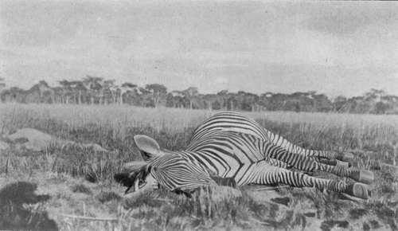

Shooting In Central Angoniland (Nyasaland). Part 5
Description
This section is from the book "Wild Life In Central Africa", by Denis D. Lyell. Also available from Amazon: Wild Life in Central Africa.
Shooting In Central Angoniland (Nyasaland). Part 5
Mohammedans will not eat pig and sometimes refuse to touch the animal, and hippo is often barred. In Nyasaland the Yao tribe—called Ajawa by the natives—are Mohammedans, and unless the throat of an animal is cut they will not eat the meat. The throat has to be cut when there is life in the animal; but the Yaos are not so particular in this respect as the Indian Mohammedans, for I have seen them cut the throats of dead animals, although they always pretend that they are not quite dead.
Zebra (Burchell's) Shot In Nyasaland
This throat cutting is often a nuisance to the sportsman who wants to keep the masks of game for setting up, and in such a case the African Mohammedan will usuallv be satisfied if he is allowed to stab the beast's throat near its junction with the chest. In India this rite is called " hallalkaro."
When a beast falls it is a mistake to allow the men to rush forward, as the animal may get up again, so I always restrain my men and approach first, and it is needless to remark that one should never approach an animal, especially a dangerous animal, with an empty rifle. Many fine trophies have been lost by omitting to follow this simple rule, and quite a number of elephants have got up and been lost by not making sure they were dead by putting in a final shot.
The best races of natives I have met for bush and spooring work are the Awemba, who live in northern parts of North-Eastern Rhodesia, but I have also seen excellent hunters and trackers belonging to such tribes as the Akunda, Awisa, Achewa, Angoni, Asenga, and Yaos. It usually depends on whether a native lives in a good game district, and whether he is fond of hunting. As to pluck, this is not singular to any particular race of savages, although the paramount races, such as the Awemba, Angoni, and Yaos, are more likely to act bravely in an emergency than members of slave tribes.
On June 7 I went out to try to find some elephants that had been coming to the fallen maize stalks near Kamwendo's village. I had Kamwendo with me and he is one of the best elephant trackers I have ever seen, and once he gets on the spoor of a good bull he is almost certain to take one up to him. He has been with me on several trips and most of the Europeans who have hunted elephants here have had him with them, and he must have seen over fifty big bulls shot, if not more. He is an Achewa headman, and his village is about eight miles south of Fort Manning. He is always ready to go out with sportsmen, so if anyone comes here who wants a shot at an elephant Kamwendo will take him to the best places and do the tracking work.
Besides being a good spoorer, he is an agreeable native to get on with as he is always civil, and he knows all the villages and elephants' haunts for many miles around, and he is very popular with the natives as he is fond of beer, and often goes off on visiting rounds to look for it. A native will often travel twenty or thirty miles to a village where there is beer, and I know several headmen who are constantly on the move to try to find it.
Kamwendo took me to his gardens and we found the spoor of a single bull elephant, but the tracks were two days old, so we went off to a drinking hole about six miles away and on getting there we found the night's tracks of three small elephants, two bulls and a cow, but Kamwendo agreed with me that they were not worth following, as the tusks would not be more than 20lb. to 251b. each.
It does not follow that the best tuskers have the largest feet, but there is a limit, and any elephant with tracks less than 5oin. in circumference is not likely to be a very large one. An average measurement for a big bull's front feet will be about 54m. in circumference, and some of the largest will measure 56m. or 58m. As we were looking round, I spotted a herd of hartebeests feeding near the top of the dambo, and as my men asked me to shoot one I went off to stalk them. I may say here that there is only one variety of hartebeest in Central Africa, Lichtenstein's, and in referring to hartebeests this is the variety that is meant.
With some trouble I got to within 150 yards, as I think the game had seen us at the water hole and were slightly suspicious. I fired at one which dropped in its tracks and then fired at another which also fell to the shot, but it jumped up at once and ran off. The first one very soon expired, so I started off to try to find the other. I put it up once, and, judging by the way it ran, it did not seem to be badly damaged. As we were all thirsty and rather tired, we returned to the water hole, where I made some tea in a small kettle I had brought out, and demolished some bread, a tin of sardines, and three hard-boiled eggs. Then, after a smoke, I left some of the men to cut up the dead harte-beest, and went off with Kamwendo and another man to try to find the wounded animal. Once again, about 4 p.m., we disturbed it, and as it was going strong, and the sun was sinking, we had to leave it and get back. I had spent a good six hours on its tracks, so had done my best to find it, for I loathe wounding and losing a beast. It was past sundown when I got home, and by this time the nightjars were hovering round in the open spaces after moths, and the frogs in the Bua were croaking hard. Darkness soon comes on there, and, if there is not a good moon, it is uncomfortable being benighted in rough bush country ; and many is the fall and hard bump I have received when stumbling back to camp in the dark. Bare legs are certainly best for daytime when one can see where he is going, but at night a pair of putties or light gaiters would be a comfort and save some painful stabs and scratches.
There is a vile vegetable growth in this country which is called chitaisi, and its pod is covered with numberless fine hairs, which cause a most painful itching and rash. On a wintry day, and when these pods are ripe and ready to fall, the minute hairs get blown all over the place, and if they get into clothes or blankets they prove a great nuisance. When following elephants into thick cover the hairs will drop on one's arms and neck, and I can assure the reader that they are just like hundreds of sharp needles, with some irritating acid put on them, being pressed into one's flesh. The itch ceases in a few hours and leaves a rash like nettle stings, but it does no further damage ; although if a man's blood was in bad order, and he scratched the skin off to get relief, it might end in an attack of blood poisoning.
Continue to:
- prev: Shooting In Central Angoniland (Nyasaland). Part 4
- Table of Contents
- next: Shooting In Central Angoniland (Nyasaland). Part 6